The Garden of Forking Data
SOCI 3440 Quantitative Research Methods
Professor, Department of Sociology
Memorial University
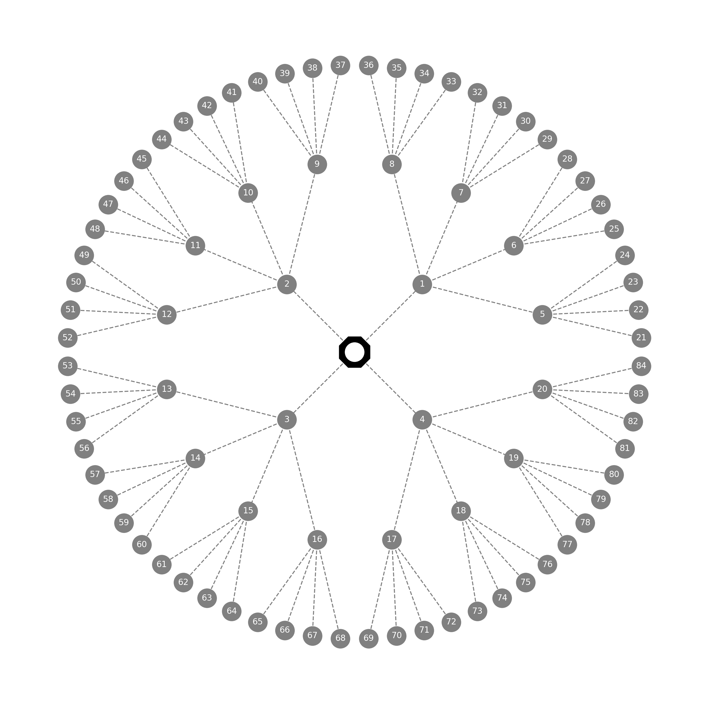
Today, we focus on building Bayesian estimators from the ground up. To quote McElreath, the basic idea underlying Bayesian Data Analysis is: (1) for each possible explanation of the sample, (2) count all the ways the sample could happen. (3) Explanations with more ways to produce the data are more plausible. Let's see what that means...
There are many different datasets that we might find ourselves with in the process of sampling, just as there are many different stories that come about from the choices people makes in Borges' The Garden of Forking Paths. All of our choices in sampling, and other things that are beyond our control, influence the observations we end up observing. So we need to think about what could have happened, and then consider the relative probability of what did happen.
For the globe tossing example,
For each possible proportion of water on the globe, count all the ways the sample of tosses could happen. Proportions with more ways to produce the sample are more plausible.

There are 5 possible proportions of water. We drew a sample (with replacement), and observed Water, Land, Water. How many ways can each possible proportion generate / produce the data we observe in our sample? Whichever is the largest is the most plausible proportion.
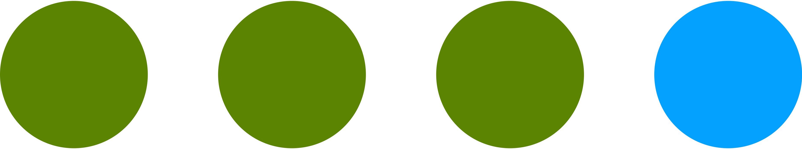
Let's start with Possibility 2
25% of Earth's surface is covered with water
We will work through this possibility fully so you see how the logic works, and then we'll move through the others more efficiently.
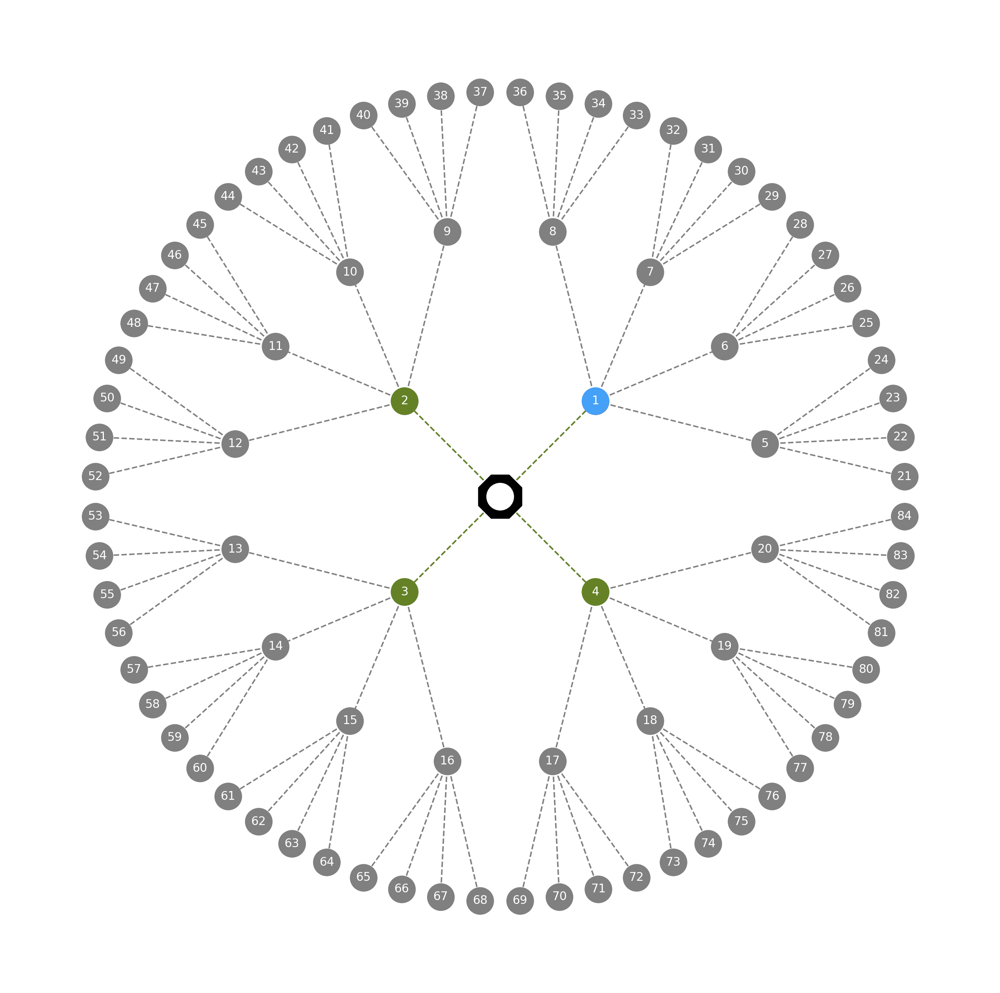
Temporary Assumption: 25% of Earth's surface is covered with water.
That means that when we make our first draw (observations 1-4), we should see 1 water and 3 land observations. This is represented on the left with 1 blue circle (water) and 3 green circles (land) on the innermost ring.
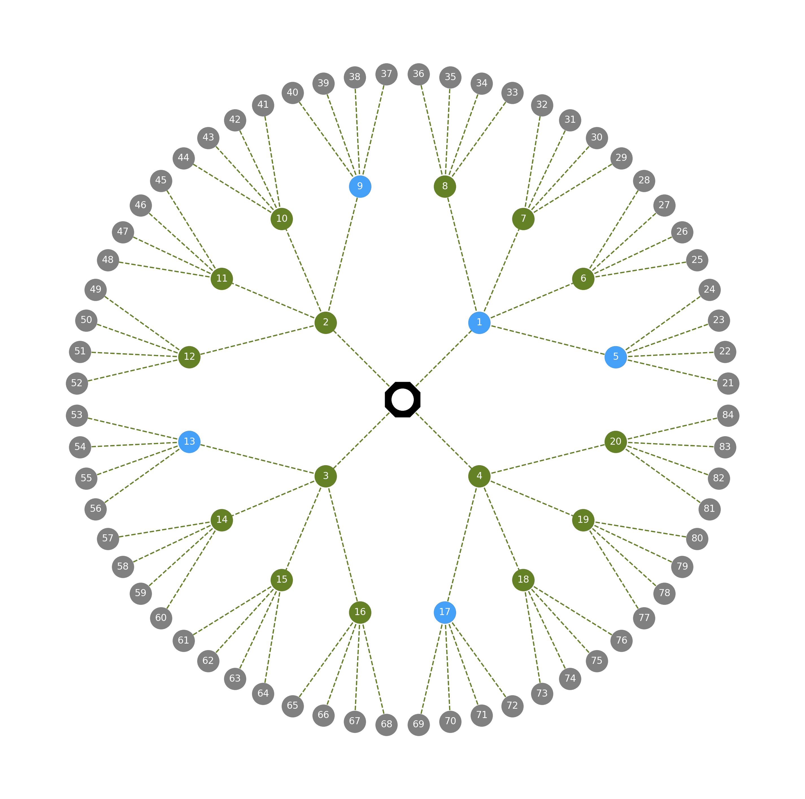
Temporary Assumption: 25% of Earth's surface is covered with water.
We sample with replacement, which means we have the same setup for second draw...
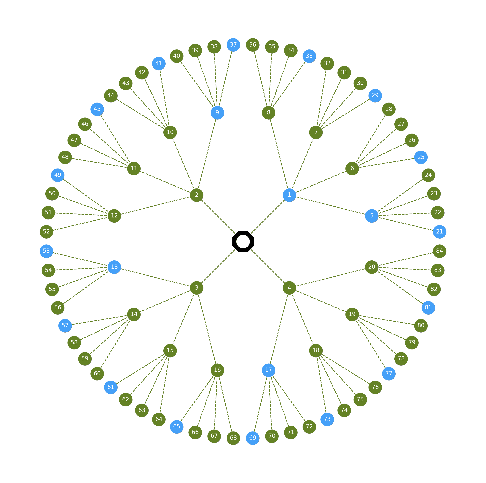
Temporary Assumption: 25% of Earth's surface is covered with water.
... and, finally, the exact same setup for our third draw.
Now, let's start counting! 🤗
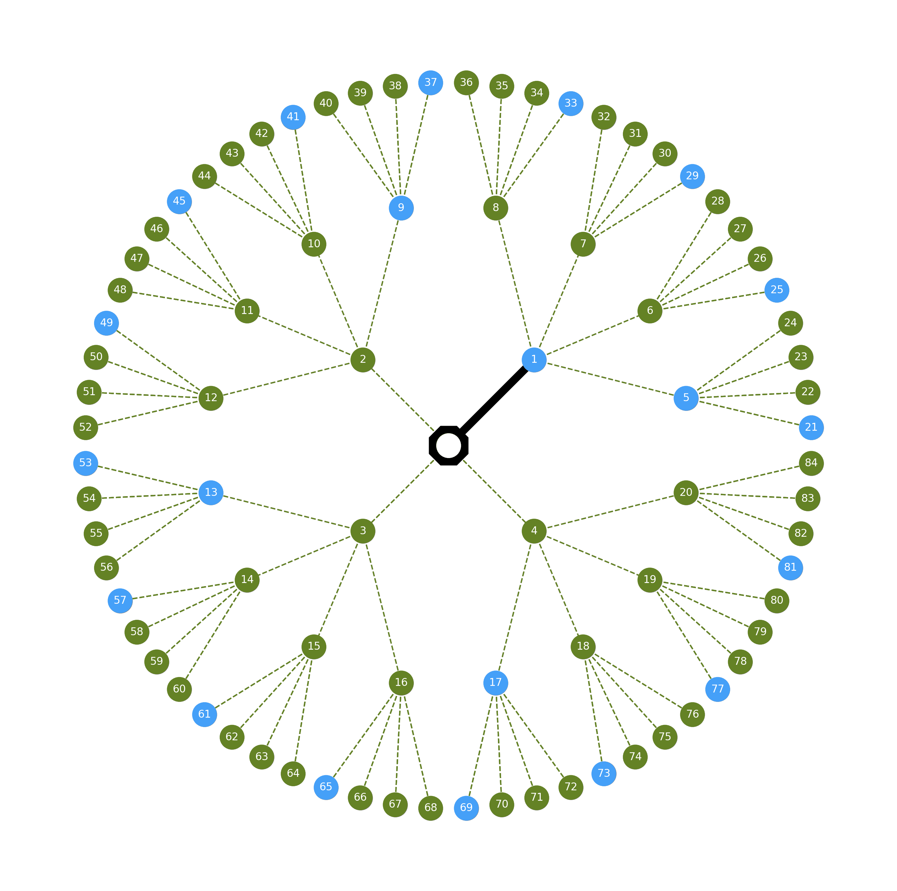
Temporary Assumption: 25% of Earth's surface is covered with water.
Our first observation is water (W). Let's trace that out in the Garden of Forking Data.
Since we only have one way to see one water given our current assumption, there is one path we can follow to our Water observation. It's marked with the thick black line.
The other three land observations we could have made (circles 2, 3, and 4) are no longer relevant, as we did not make them.
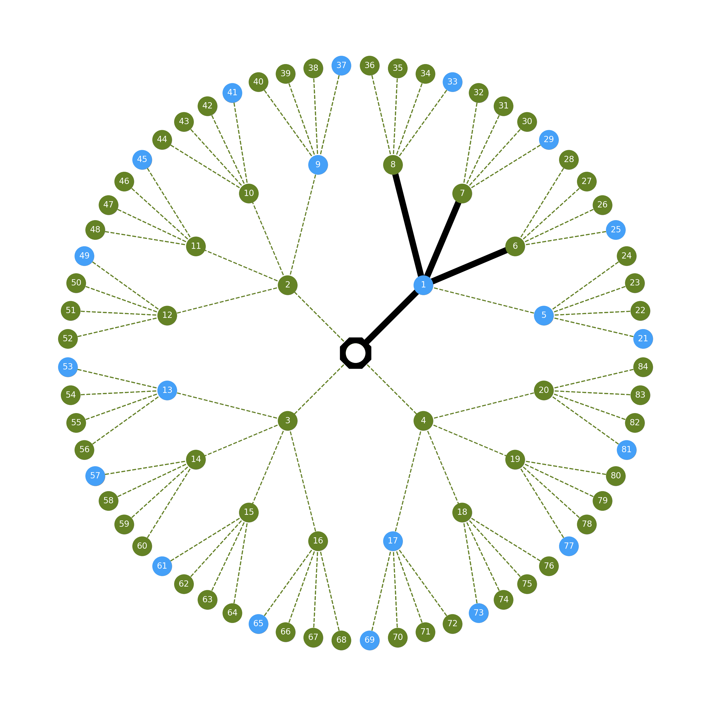
Temporary Assumption: 25% of Earth's surface is covered with water.
Our second sample is land (L), and we can again trace that observation out in the Garden of Forking Data. Follow the solid black line... There are three paths through which we could have seen land. We don't know which one, but that doesn't matter.
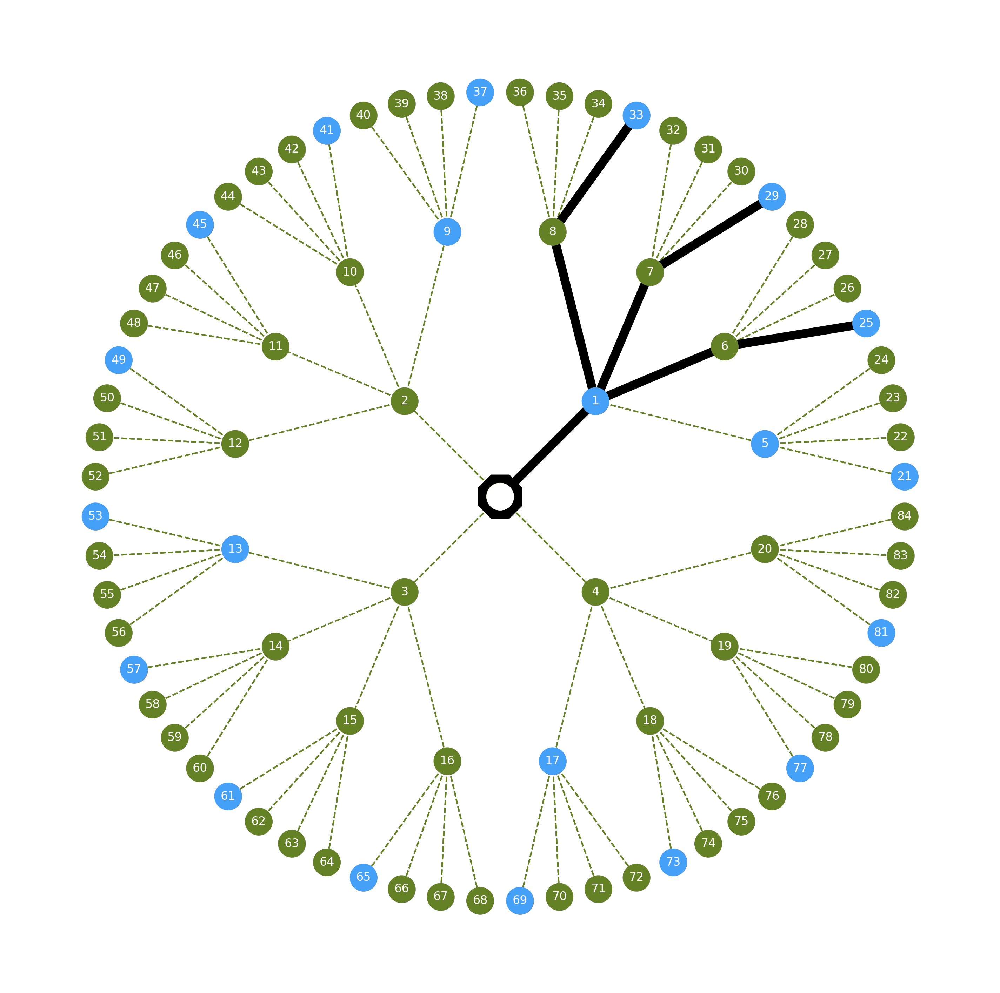
Temporary Assumption: 25% of Earth's surface is covered with water.
Our third and final sample is Water. Let's trace it out again to see which paths are open and which are closed off.
By the third draw, there are 3/64 ways to see W,L,W if the true proportion of water on the earth's surface is 25%.
Another way to say this is that there are 3 different ways that we could see a sample of WLW if the proportion of water is 25%.
Now we do this counting exercise for 50% Water and 75% Water as well. (We already know that 0% and 100% are not plausible, since we have seem both W and L.)
For each and every possible explanation, we count up the number of ways that we could see the data is that explanation were true. Once we have done so for all possible explanations, we compare the results. Possible explanations that enable us to see the data more ways are more plausible than those that allow us to see the data in fewer ways.
TODO: visualize these as well?
| Possible Explanation | Ways to Produce [W,L,W] |
|---|---|
| 0% Water 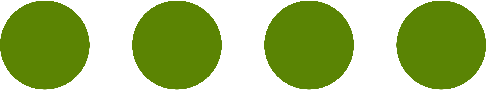 |
0 |
| 25% Water |
3 |
| 50% Water 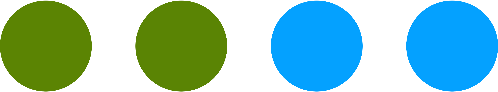 |
? |
| 75% Water 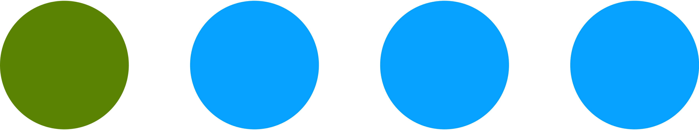 |
? |
| 100% Water 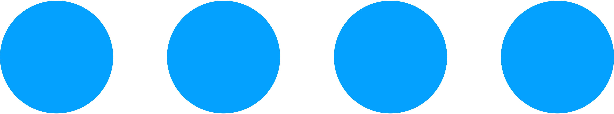 |
0 |
1 slide of the full forking garden with 50%
| Possible Explanation | Ways to Produce [W,L,W] |
|---|---|
| 0% Water |
0 |
| 25% Water |
3 |
| 50% Water |
8 |
| 75% Water |
? |
| 100% Water |
0 |
1 slide of the full forking garden with 75%
| Possible Explanation | Ways to Produce [W,L,W] |
|---|---|
| 0% Water |
0 |
| 25% Water |
3 |
| 50% Water |
8 |
| 75% Water |
9 |
| 100% Water |
0 |
So far, we've figured out that there are 0 ways to see WLW if the proportion of water is 0%, 3 ways if it is 25%, 8 ways if it is 50%, 9 ways if it is 75%, and 0 ways if it is 100%.
Which proportion - possible explanation - is the most plausible? 75%, of course.
We can use multiplication to save ourselves some counting. In the first row, where the proportion of water is 0%, we can multiple 0 by 4 by 0 to get 0. In the second row, we have 1 way to produce water, 3 ways to produce land, and 1 way to produce water, so we can multiply 1 by 3 by 1 to get 3. In row 3, where we assume 50% water, we can multiply 2 ways to see water by 2 ways to see land by 2 ways to see water. And so on...
| Possibilities | Ways to Produce [W,L,W] |
|---|---|
| 0% Water |
0 x 4 x 0 = 0 |
| 25% Water |
1 x 3 x 1 = 3 |
| 50% Water |
2 x 2 x 2 = 8 |
| 75% Water |
3 x 1 x 3 = 9 |
| 100% Water |
4 x 0 x 4 = 0 |
There is very little evidence to go off of just yet, so the relative differences between each possible explanation (which is what we are interested in) are quite small. But, we will start to see bigger differences as we see more data.
Imports
L0_Root = ["0", '1', '2', '3', '4']
L1_SM01 = ['1', '5', '6', '7', '8']
L1_SM02 = ['2', '9', '10', '11', '12']
L1_SM03 = ['3', '13', '14', '15', '16']
L1_SM04 = ['4', '17', '18', '19', '20']
L2_SM05 = ['5', '21', '22', '23', '24']
L2_SM06 = ['6', '25', '26', '27', '28']
L2_SM07 = ['7', '29', '30', '31', '32']
L2_SM08 = ['8', '33', '34', '35', '36']
L2_SM09 = ['9', '37', '38', '39', '40']
L2_SM10 = ['10', '41', '42', '43', '44']
L2_SM11 = ['11', '45', '46', '47', '48']
L2_SM12 = ['12', '49', '50', '51', '52']
L2_SM13 = ['13', '53', '54', '55', '56']
L2_SM14 = ['14', '57', '58', '59', '60']
L2_SM15 = ['15', '61', '62', '63', '64']
L2_SM16 = ['16', '65', '66', '67', '68']
L2_SM17 = ['17', '69', '70', '71', '72']
L2_SM18 = ['18', '73', '74', '75', '76']
L2_SM19 = ['19', '77', '78', '79', '80']
L2_SM20 = ['20', '81', '82', '83', '84']
watercolor = '#45A0F8'
landcolor = '#648225'
every_draw = [L0_Root, L1_SM01, L1_SM02, L1_SM03, L1_SM04, L2_SM05, L2_SM06, L2_SM07, L2_SM08, L2_SM09,
L2_SM10, L2_SM11, L2_SM12, L2_SM13, L2_SM14, L2_SM15, L2_SM16, L2_SM17, L2_SM18, L2_SM19, L2_SM20]
edges = []
for draw in every_draw:
edges.append([draw[0], draw[1]])
edges.append([draw[0], draw[2]])
edges.append([draw[0], draw[3]])
edges.append([draw[0], draw[4]])
edges = pd.DataFrame(edges)
edges.columns = ['source', 'target']water_samples = ['1', '5', '9', '13', '17', '21', '25', '29', '33', '37', '41', '45', '49', '53', '57', '61', '65', '69', '73', '77', '81']
def assign_color(nodelist, waterlist, watercolor=watercolor, landcolor=landcolor):
return [watercolor if node in waterlist else landcolor for node in nodelist]
draw_one_nodes = ['1', '2', '3', '4']
draw_one_colors = assign_color(draw_one_nodes, water_samples)
draw_two_nodes = ['5','6','7','8','9','10','11','12','13','14','15','16','17','18','19','20']
draw_two_colors = assign_color(draw_two_nodes, water_samples)
draw_three_nodes = []
for node in G.nodes():
if node not in draw_one_nodes:
if node not in draw_two_nodes:
draw_three_nodes.append(node)
draw_three_colors = assign_color(draw_three_nodes, water_samples)
draw_one_all_paths, draw_two_all_paths, draw_three_all_paths = [('0', '1'), ('0', '2'), ('0', '3'), ('0', '4')], [], []
for edge in G.edges():
if edge[0] in draw_two_nodes:
draw_two_all_paths.append(edge)
if edge[1] in draw_two_nodes:
draw_two_all_paths.append(edge)
for edge in G.edges():
if edge[0] in draw_three_nodes:
draw_three_all_paths.append(edge)
if edge[1] in draw_three_nodes:
draw_three_all_paths.append(edge)
paths_1 = [
('0', '1')
]
paths_2 = [
('0', '1'),
('1', '6'),
('1', '7'),
('1', '8')
]
paths_3 = [
('0', '1'),
('1', '6'),
('1', '7'),
('1', '8'),
('6', '25'),
('7', '29'),
('8', '33')
]def plot_garden(G, pos, draw_one, draw_two, draw_three, paths, filename):
plt.figure(figsize=(12, 12))
# Draw everything to ensure layout doesn't change when you produce a series of images
nx.draw_networkx_nodes(G, pos, nodelist=['0'], node_size=1_000, alpha=1, node_color='black', node_shape='8')
nx.draw_networkx_nodes(G, pos, node_size=320, alpha=1, node_color='gray')
nx.draw_networkx_edges(G, pos, style='dashed', width=1, edge_color='gray')
nx.draw_networkx_labels(G, pos, font_size=8, font_color='white')
if draw_one is True:
nx.draw_networkx_nodes(G, pos, nodelist=draw_one_nodes, node_size=320, alpha=1, node_color=draw_one_colors)
nx.draw_networkx_edges(G, pos, style='dashed', width=1, edgelist=draw_one_all_paths, edge_color=landcolor)
if draw_two is True:
nx.draw_networkx_nodes(G, pos, nodelist=draw_two_nodes, node_size=320, alpha=1, node_color=draw_two_colors)
nx.draw_networkx_edges(G, pos, style='dashed', width=1, edgelist=draw_two_all_paths, edge_color=landcolor)
if draw_three is True:
nx.draw_networkx_nodes(G, pos, nodelist=draw_three_nodes, node_size=320, alpha=1, node_color=draw_three_colors)
nx.draw_networkx_edges(G, pos, style='dashed', width=1, edgelist=draw_three_all_paths, edge_color=landcolor)
if paths:
nx.draw_networkx_edges(G, pos, edge_color='black', edgelist=paths, width=6)
nx.draw_networkx_nodes(G, pos, node_size=320, alpha=1, node_color='white', nodelist=[n for n in G.nodes()][0])
plt.axis("equal")
plt.axis("off")
plt.savefig(f'media/{filename}.png', dpi=300, bbox_inches='tight')
plt.close()References
CC BY-SA 4.0